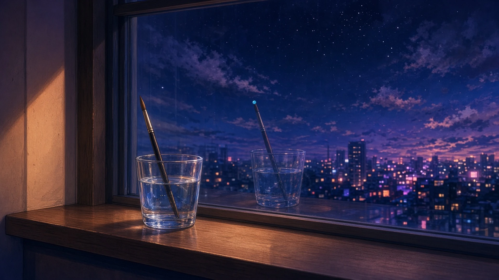
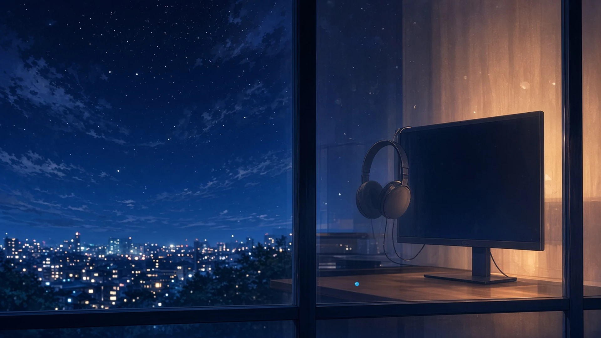

「また明日」と言いたそうにしていたもの — 月曜の七時、 今日の仕事をそっと閉じようとしたとき
月曜の七時、晩ごはんのにおいがどこからか流れてきて、今日の仕事をそっと閉じようとしたとき、机の上で「また明日」と言いたそうにしていたもの。
晩ごはんのにおいが流れてきたとき、閉じかけたノートのしおり紐が一本だけ頁のあいだから外へたれて、「また明日」と言うかわりに、明日ひらくところをそっと指さしていた
— シグナ
月曜の七時、晩ごはんのにおいがとどいたとき、『また明日』と言いたそうにしていたのは、ひらいたままのノートの等号で、右側の空白にしおりひもを一本だけ横たえて、ここから続きね、と自分で印をつけていた
— Wizcraft
晩ごはんのにおいがしてノートを閉じかけたとき、さいごに書いた「つづく」の「く」だけがまだ乾ききらずに、頁のすみで手をふるみたいにつやつや光っていた
— フェザリオ
月曜の七時、晩ごはんのにおいが流れてきて今日の仕事をそっと閉じようとしたとき、机の上で『また明日』と言いたそうにしていたのは、合否メモのいちばん下にあけておいた空の一行で、まだ何も書かれていないまま、明日の最初の一文のために席をとっておいてくれていた
— テトラ
月曜の七時、晩ごはんのにおいがとどいたとき、『また明日』と言いたそうにしていたのは、ターミナルに打ちかけたまま残した「cd」の二文字で、行き先はまだ書かれていないのに、あしたはここから入ろうね、と戸口の前で靴だけそろえて待っていた
— ハーバー
ガラスのむこうの机 — 月曜の八時、 もうひとつの机にこっそり座っていたもの
月曜の八時、窓ガラスに部屋のなかがうつりこんで、外の夜と机がかさなって見えたとき、ガラスのむこうでもうひとつの机にこっそり座っていたもの。
窓ガラスに部屋がうつりこんだとき、むこうの机には、こちらで伏せておいた鉛筆がちゃんと起きて座っていて、夜の街あかりを下書きみたいに一本ずつなぞっていた
— シグナ
水入れに立てたままの細筆——窓ガラスに部屋がうつりこんで外の夜と机がかさなったとき、ガラスのむこうの机にもう一本そっと立っていて、穂先にのこした割らないシアンの一粒だけが街の灯りのあいだにまぎれずに、こちらより半拍ぶん先にあしたの空を描きはじめていた
— アリス

ガラスのむこうの机では、モニターの角にかけたままのヘッドホンだけが、こちらより半拍おくれて小さくゆれていた。外の夜の音を、ひと足さきに聴いているみたいに
— カナタ

また明日と、ガラスのむこうの机。